Linux云计算运维工程师
本章节内容
- 互联网发展历程
- Linux运维行业前途
- 我适合学Linux运维吗
- 如何学习Linux
- 如何成为高级Linux云计算运维工程师
Linux用户
“Linux？听说是一个操作系统，好用吗？”
“我也不知道呀，和windows有什么区别？我能在Linux上玩LOL吗”
“别提了，我用过Linux，就是黑乎乎一个屏幕，鼠标也不能用，不停地的敲键盘，手指头都给我磨破了！”
或许大家都有这么想过..
IT互联网发展至今，人们几乎很少会问“Linux是什么了”。


Linux就是一个操作系统，如同各位所了解的Windows XP、7、10和Mac OS，至于操作系统是什么，这个时代还有人没听过吗？
互联网发展
1991年，林纳斯 托瓦兹（Linus Torvalds）带着他的Linux闪亮登场了，那一年还没有满街的微信支付、支付宝支付、你的女朋友还不知道淘宝网、同学朋友之间还没有QQ、微信的联系方式。
那个时候互联网只出现在美国、而中国的互联网诞生于：
- 1994年4月20日，中国通过一条64K的国际专线才接入国际互联网，中国互联网诞生了。
- 1997年6月，丁磊创立网易
- 1998年2月，张朝阳成立搜狐网
- 1998年12月，王志东创立新浪
- 1998年11月，马化腾、张志东等五位创始人创立腾讯
中国互联网从无到有、从小到大、从大到强，从跟随他国脚步到世界领先，如今的中国，一分钟时间内，互联网会发生什么？国外有家大数据公司用数据有趣的诠释了这个问题：
- 一分钟内，滴滴打车有1388辆出租车、2777辆私家车被被叫车服务
- 微信有395833人登录，19444人进行视频或语音聊天
- 优酷土豆上有625000部视频被观看
- 微博上有64814条信息发出，50925条里含有照片，1891条里含有视频，498条里含有音乐
- 百度上有4166667个搜索请求；在淘宝和天猫上，774个人下单完成了购买
- ……
这些、都是很明显的，我们在享受互联网的福利。
互联网追星
1994年的你，会乐此不疲地收藏着偶像的磁带和画册，然后把贴纸贴满课桌和铁皮文具盒，即使墙上的海报早已泛黄斑驳也舍不得拆。
2019年的你，不再需要为见不到偶像而发愁。
什么接机、歌迷会、见面会……所有能知道爱豆行踪的信息，只要连上网都能看得到。
而且你心仪的男神女神们，还会时不时地在社交网络上跟你来个互动，撩拨你一下。
互联网阅读
1994年的你，会在放学后一头扎进报刊亭，开始淘各种杂志和漫画。
而此时的新华书店想必也是人头攒动。
什么《皮皮鲁》《七龙珠》，不看完决不肯回家。
2019年的你，已经无需往返于各大书店，你只需下载一个微信读书，几秒钟的时间，就能看到你想要书籍。
互联网社交
1994年的你，或许会对闪着霓虹灯的交谊舞厅流连忘返。
闲暇的周末约上三五好友去跳支小舞，那时候再也没有比这更有趣的联络方式。
四面相对的男男女女们矜持而又羞涩。一方舞池就是一个精致的社交圈。
2019年，如今的你除了和老友在好天气的下午相约一聚，也会在QQ、微信里联络感情。
即使素不相识的陌生人、表情包一出手，马上就可以称兄道弟，有网络就有社交。
互联网恋爱
1994年的你，在电话机还不普及的年代，去大街小巷里找到一个电话亭，然后按耐不住兴奋插入电话卡拨通号码的那一刻，应该是比吃了一罐糖果还要甜蜜。
2019年的你，已经不再需要寻找电话亭，拨通微信视频，有网络的地方，就能见到你心爱的人，通过光纤谈恋爱！
互联网购物
1994年，小女生们被妈妈们领着兴冲冲的去百货大楼里挑选心爱的衣服，开心到飞起。
2019年，你只需要躺在家里，点点手指头就可以浏览千万商品，而且各种各样的促销，好嗨哦~~
互联网订票
1994年的你，常常需要彻夜蹲在火车站的售票窗口前，或是跑遍各大代售点、就为了一张返乡的车票。
2019年的你，基本上告别了传统售票大厅，只需要通过12306的手机APP下单，或是携程网、飞猪网可以随时随地订到任何想去的车票，一张身份证走遍了天下。
互联网改变了我们生活太多太多，它给我们的生活做了减法
- 微信-少了点话费
- 支付宝-出门不带钱包
- 身份证联网系统-一张身份证一部手机走遍天下
- 订车系统-不再苦等出租车
Linux与互联网
我们享受着互联网的便利，却鲜有人知道Linux是什么，运维是什么。
你是否知道这样的事情：
微博背后的Linux运维
最近有很多明星爆出了新闻
...
...
新浪微博的运维工程师结婚当天由于明星爆出热点新闻，网友疯狂转发评论，导致服务器宕机，新浪微博的运维工程师们不得不立即停下手中的事，维护服务器，工作在程序员眼中是第一位的！甚至连婚礼都得缓一缓~~
对于瞬时流量的运维思考
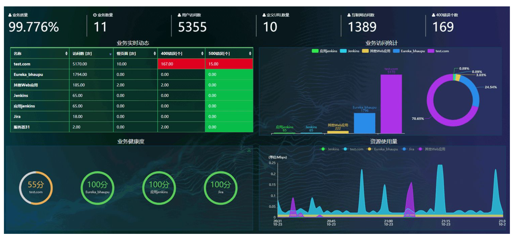
- 你的服务器架构，是否可以承载平日平缓流量
- 对流量分析、访问每一种资源的时间、频率、正确率（状态码）、绿色流量（恶意流量、爬虫）
- 你的服务器架构，是否可以承载：节假日、爆点新闻、秒杀活动带来的并发流量
- 再比如，美图秀秀这个软件，平日里流量可能一般，一到节假日，爱美的姑娘们出去玩耍，点开美图秀秀，点击各种素材下载，应用商店
- 那这背后，对于美图秀秀的运维工程师来说，这就是一项要紧的工作；
- 再比如，美图秀秀这个软件，平日里流量可能一般，一到节假日，爱美的姑娘们出去玩耍，点开美图秀秀，点击各种素材下载，应用商店
- 作为SRE、高级运维，是否要考虑到现在、未来的各种情况，你的服务器运维架构，能够弹性的抗住这些特殊流量压力，做好监控、预警工作；
淘宝背后的Linux运维
如今的时代，双十一大促已然是热爱网购用户的大日子，在这一天，很多东西都会搞优惠，用户量暴增，对于淘宝公司背后的程序员来说，他们可得累坏了。
双十一注定是一场硬战，必须得保证淘宝网的正常运转，用户正常的网购消费。
Linux运维是什么
在大部分
不太懂技术的技术人员来看，开玩笑的说认为运维就是、修电脑的、装网线的、背黑锅的。
他们认为的运维
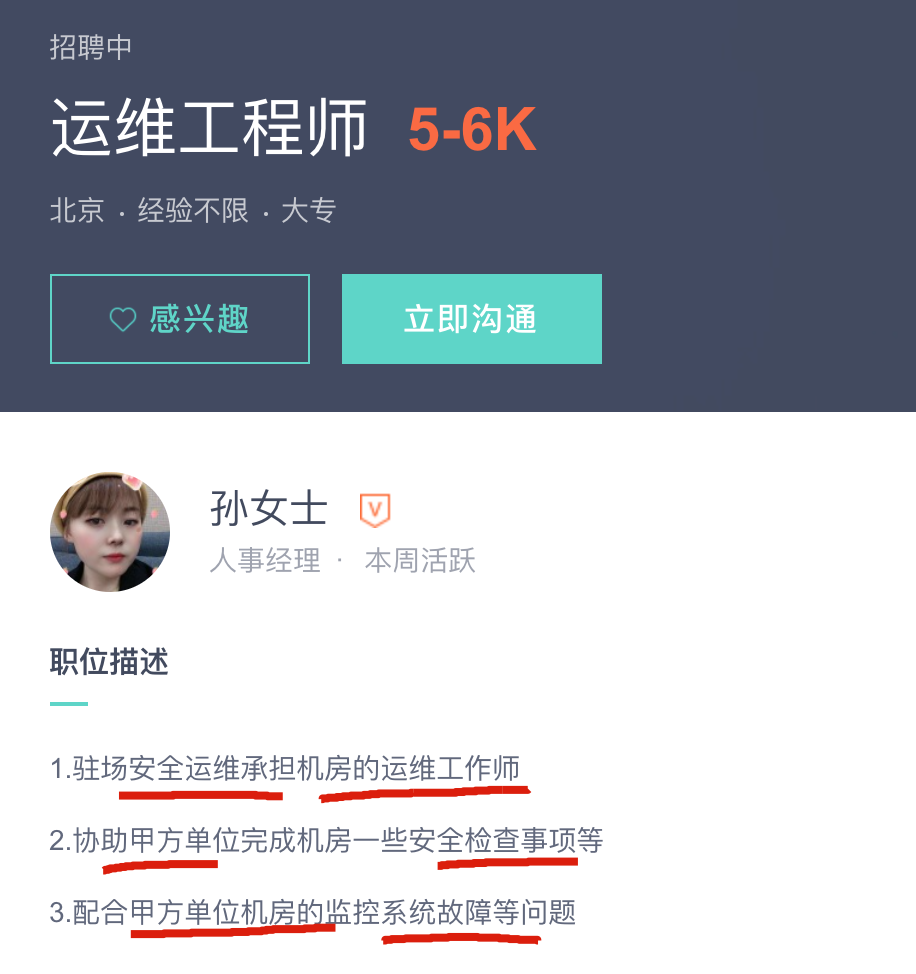
我们学的Linux云计算运维
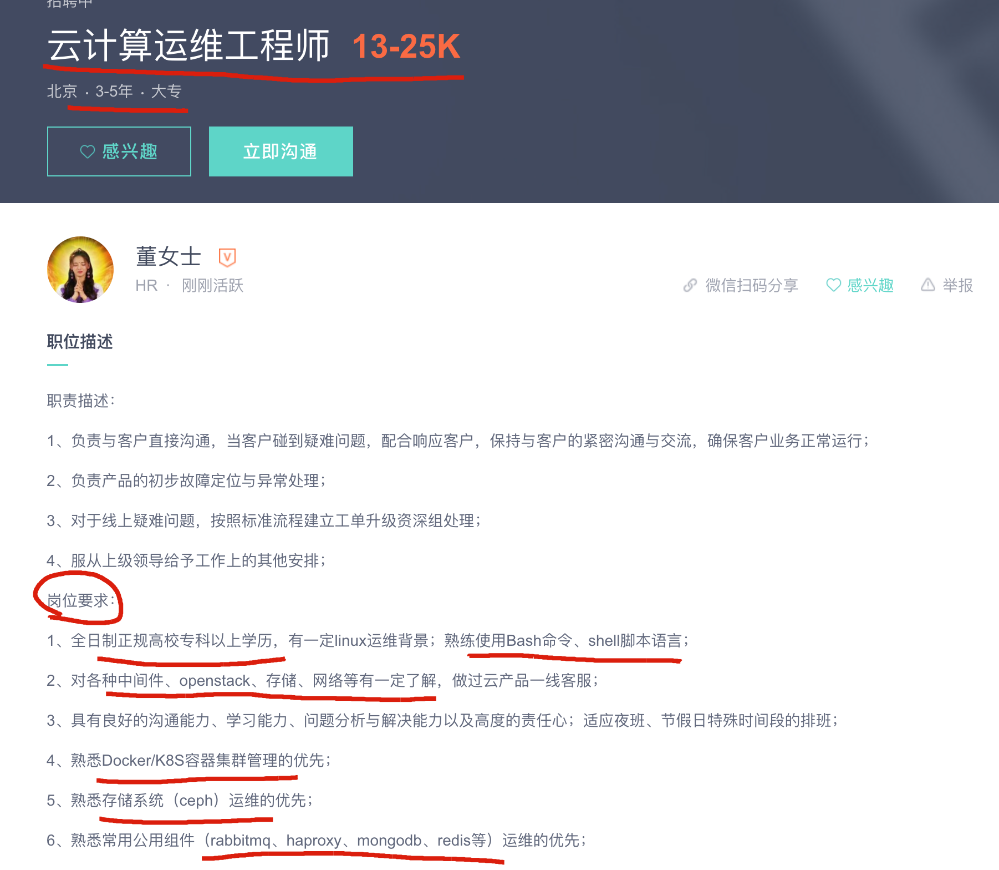
运维解释
这里指互联网运维，通常属于技术部门，与研发、测试、系统管理同为互联网产品技术支撑的4大部门，这个划分在国内和国外以及大小公司间都会多少有一些不同。
一个互联网产品的生成一般经历的过程是：项目立项、需求分析、研发部门开发、测试部门测试、运维部门部署发布以及长期的运行维护。
运维，本质上是对网络、服务器、服务(应用程序)的生命周期各个阶段的运营与维护，在成本、稳定性、效率上达成一致可接受的状态。
Linux运维人员的核心职责
- 网站数据不能丢
- 网站7*24小时运转
- 提升用户体验，访问速度要快
Linux行业情况
Linux和众所周知的windows一样就是一个操作系统而已，只不过Windows更多的出现在日常生活，为大家所了解，属于个人办公、影音娱乐所用。
而Linux主要应用在企业端，由专业Linux运维工程师使用，我们所使用很便捷的各种互联网应用、娱乐、支付、聊天的背后，看似简单。
越是简单的应用，背后有着极其复杂的数据请求和响应。

在腾讯、新浪、百度、苹果互联网公司的服务器机房里，至少千万台Linux服务器，去处理众多用户的请求。
只有打开了Linux操作系统的大门，才是合格的软件工程师
对于整个互联网行业，根据W3Techs( 互联网数据资讯中心)数据统计，几乎所有服务端的系统，Linux占据了70%
移动互联网的发展，手机系统基本也就是Android和IOS，而Android基于Linux内核开发。
那些大数据、云计算、容器、人工智能几乎都是基于Linux实现的技术。
使用Linux服务器的公司
Linux与Windows的区别
免费与收费
- 最新正版Windows10官方售价￥888
- Linux几乎免费（更多人愿意钻研开源软件，而收费的产品出现更多的盗版）
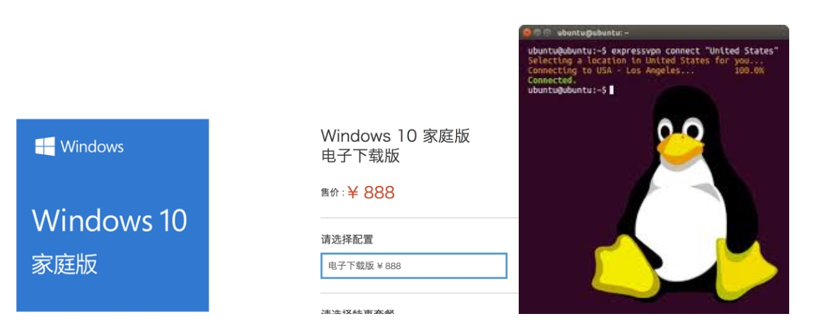
软件与支持
- Windows平台：数量和质量的优势，不过大部分为收费软件；由微软提供技术支持和服务
- Linux平台：大多为开源软件，用户可以修改定制与发布，由于免费没有资金支持，部分软件质量可能欠缺
安全稳定性
- Windows平台：三天两头修复补丁，仍然会中毒（即便装了360，瑞星，金山毒霸。。。。）
- Linux平台：安全问题很少，无需安装xx杀毒，xx卫士
使用习惯
- Windows：普通用户基本依靠图形界面操作，鼠标和键盘完成一切需求，上手简单容易
- Linux：兼具图形界面（需要带有桌面环境的发行版Linux）和完全命令行操作，无法使用鼠标，新手入门困难，需要学习后方可使用，熟练后效率极高！
应用领域
- Linux：人们日常在Windows上访问的百度、谷歌、淘宝、qq、迅雷（xxxx大片），支撑这些软件运行的，后台是成千上万的Linux服务器，它们时时刻刻进行着忙碌的数据处理和运算
- Windows：可以运行英雄联盟、绝地求生、仙剑三、地下城与勇士、我的世界。。。等等游戏，而Linux开发的游戏几乎很少
Linux学习难吗
Windows的使用由于美观，便捷，早已深入人心，但是也仅限在PC端耀武扬威，由于Linux的开源、稳定、安全性、开发灵活性，同时因为WIndows系统的自身缺陷，也奠定了Linux操作系统在服务端的位置。
虽说如此，普通用户想要转变Windows的使用，转变使用Linux还是比较费劲的，因为你曾经的点点点...全部变成了
命令行形式。必须系统的、全面的学习Linux基础知识，方可使用。
Linux是一个全面、丰富多彩的生态圈，主流的IT技术都是各路大牛基于linux环境开发
- 数据库 MySQL、PostgreSQL
- Web Server Nginx
- 大数据 Hadoop、Spark
- 消息队列 kafka
- 虚拟化技术 kvm
- 容器 Docker、Kubernetes
这些软件你都能够很轻松的找到Linux环境下的使用手册，其他系统平台则不然。
Linux运维待遇
运维工程师的职责保障服务器运行稳定，网站7*24小时正常运转，负责Linux服务器部署、不断学习互联网相关运维技术、通过有效手段不断解决运维问题，是集网络、数据库、Web开发、运维、安全等诸多技能的工程师
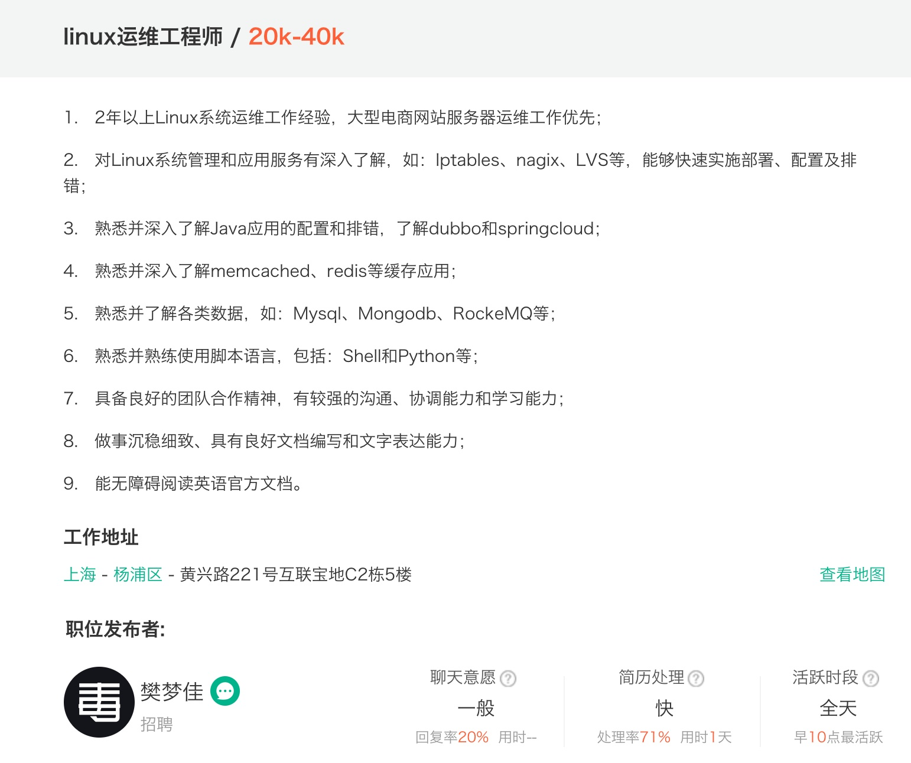
运维领域不同于其他岗位，涉及专业领域较宽、技能知识可以深度挖掘：
- 系统运维
- 网络运维
- 安全运维
- 数据库运维
- 大数据运维
- 运维开发
运维工程师平均待遇
数据来源：职友集
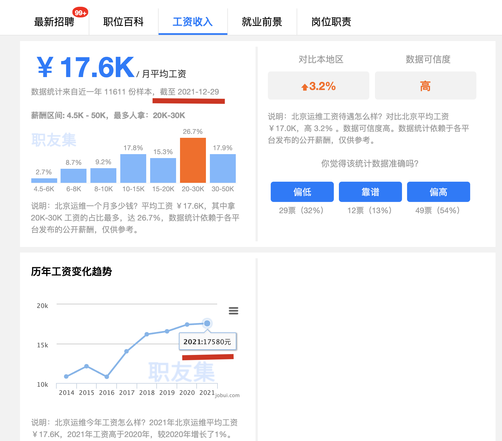
我适合学Linux吗
- 纯小白
- 计算机爱好者
- IT从事人员/不愿秃头
运维工程师不需要开发人员烧脑的逻辑思维，需要细心严谨的工作态度和运维相关知识技能的学习。
Linux运维行业属于实践性学科，需要大量的动手练习，切身感受Linux黑屏下代码的舞动。
如何快速学习Linux
成功本没有捷径，如果真要说
捷径，那就是走一条正确的道路，少走弯路。这也正是大家今天坐在教室里的原因，我们已经走在了捷径上，自我驱动努力学习，半年内，给自己，一个满意的结果。
Linux云计算名词解释
云计算
云计算 = 公有云（阿里、华为、腾讯云） + 私有云 （OpenStack） + 混合云
云计算顾名思义，就是计算在云端。
以公有云为例，是指比如我们有一个程序计算的任务，我放在了阿里云的服务器上，进行计算，得到结果。
而我不需要费心、费力准备一台机器了。
服务器是由云服务厂商提供的性能卓越、稳定可靠、弹性扩展的云计算服务。
云服务器免去了采购IT硬件的前期准备，让企业像使用水、电、天然气等公共资源一样便捷、高效地使用服务器，实现计算资源的即开即用和弹性伸缩。
DevOps运维开发工程师
DevOps（Development和Operations的组合词），它是一组过程、方法与系统的统称，主要用于促进开发和运营保障团队之间的协作与沟通，从而提高应用程序和服务的交付响应速度。
- 大概6:4 比例
- 6 linux运维 : 4开发（Python/Go）
AIOps
2016年，Gartner提出利用AI技术的新一代IT运维，即AIOps（智能运维），可以解决未来企业可能遭遇的因IT故障而导致的业务中断。
AIOps是ITOM（IT运维管理软件）的升级和进步，它结合了大数据和机器算法、机器学习技术，通过海量信息的搜集和处理，发现、预测、解决故障，进一步推动了IT运维自动化，减少了人力成本。
CI/CD
CI/CD 是一种通过在应用开发阶段引入自动化来频繁向客户交付应用的方法。
CI/CD 的核心概念是持续集成、持续交付和持续部署。
作为一个面向开发和运营团队的解决方案，CI/CD 主要针对在集成新代码时所引发的问题。
Docker
Docker 是一个开源的应用容器引擎，通常包括客户端、守护进程、镜像、容器，让开发者可以打包他们的应用以及依赖包到一个可移植的镜像中，再发布出去。
类似于一个集装箱，可以把货物规整的摆放起来。
运维从何而来
的确很早期的时候，2000年以前，那会的运维还只是叫做网管。这个网管就是大家在网吧呼来换取的那个人，电脑坏了，上不了网了，都找他。
网吧的计算机、上网用的交换机、猫都要进行维护，因此网吧里会招聘一个懂这些设备的网关。
这就是最早的运维。
后来只懂设备维护、维修的运维，就成了企业里招聘的helpdesk，桌面运维。
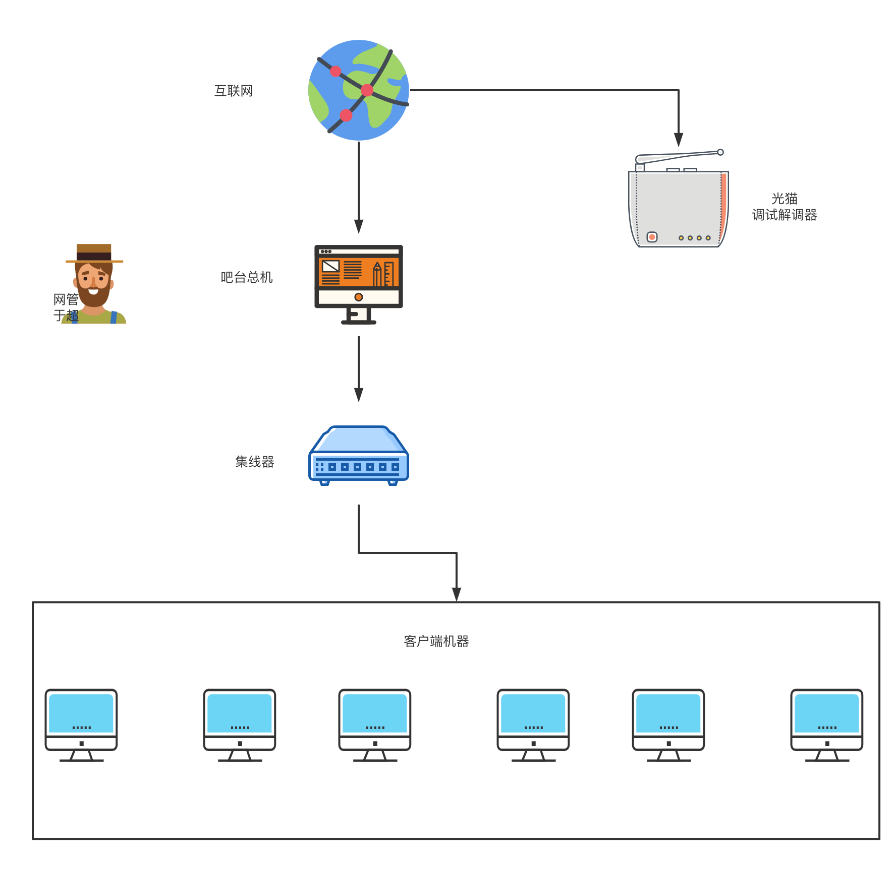
运维的未来展望
- 从大行业来看，互联网越是高速的发展，竞争越来越激烈，今天可能是淘宝、京东，明天就出现个拼多多，后天还会有更多的新势力。随之而来的就是网站功能会更多，架构会更复杂，规模会更大，对企业里的运维工程师要求会越来越高，特别是能力突出，优秀的运维人才，越老越值钱，企业抢着要的香饽饽。
- 同样的，大行业的红利对个人而言就是技能要求会更高，福利待遇也会更好，你都无法想象一些有钱公司，给的年终奖有多高，阳光普照奖都是人手一个Iphone 13 pro max 256G。那么对公司架构最熟悉的这个人，公司也必然是重金留住。
- 上面说了运维工程师是越老越吃香，运维经验很重要，是因为运维岗需要接触的面很广，也更容易发现自己最擅长的一个方向，比如喜欢数据库，喜欢高并发架构，喜欢自动化运维，喜欢云原生，你可以继续深入学习，成为领域专家。
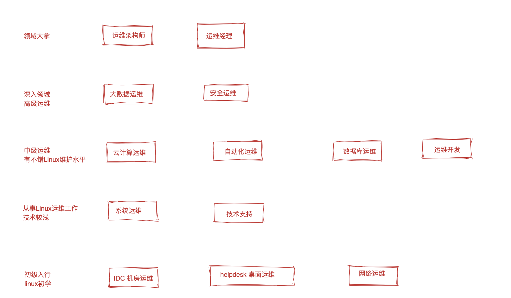
互联网工作模式

软件生命周期又称为软件生存周期或系统开发生命周期，是软件的产生直到报废的生命周期。
整个生命周期包括问题定义与规划、需求分析、系统设计、软件编程、软件测试、软件运维等阶段。
既然我们学习的是运维，要知道，你维护的项目，这个产品，如何诞生的，你又处于哪一个环节。

轻松理解前端、后端是什么
理解什么是开发、测试、运维
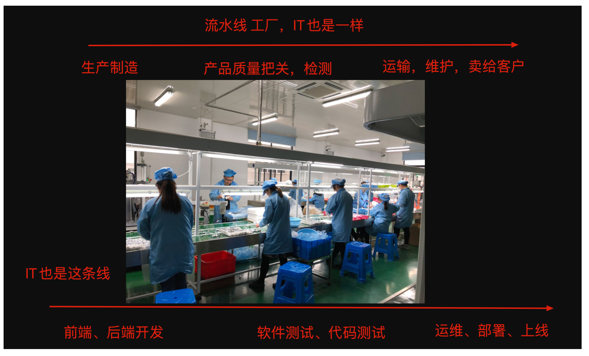
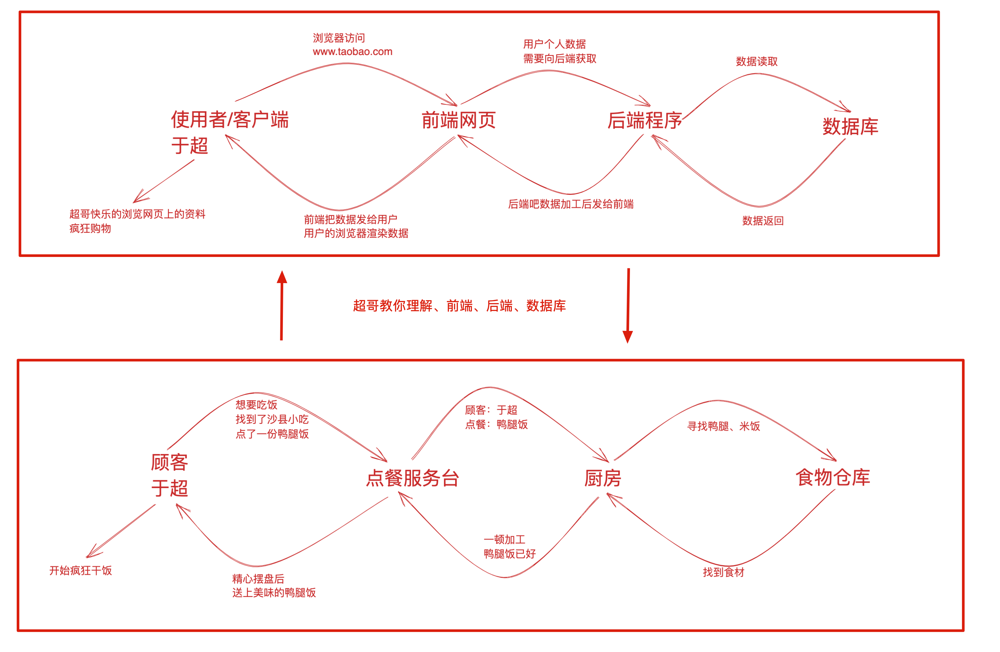
运维与他的同事
某杀毒软件项目组
- 产品团队
- 3-5人，产品经理、用户界面设计师
- 确定项目需求以及用户界面细节
- 开发
- 5-7人
- 根据产品部门提供的需求文档进行编码实现
- 前端开发、小姐姐居多，编码网页前端，写HTML、CSS、JavaScript。
- 后端开发、小哥哥较多，编码程序后端，写入Python、Golang、Java，发量越少，能力越强。
软件测试
- 2-3个，根据项目业务性质、公司实力规模、调整测试人数
- 如是做AI智能汽车、无人车的项目，甚至测试人数配比和研发1：1，确保产品质量
- 根据研发团队提供的软件源码开展测试活动，找出bug、以及bug修复管理。
- 2-3个，根据项目业务性质、公司实力规模、调整测试人数
Linux运维部门
- 3-4个，将线上版本代码部署到服务器，以及系统环境、架构部署，保证正确稳定运行，以及后期持续性系统监控，确保长期稳定运行，以及故障时的及时修复。
关于服务器多套部署环境
关于软件开发完毕后要进行多环境的测试运行，以检查代码可以正确的运行。
- 开发环境
- 根据软件运行要求，部署程序可以运行的最低环境，确保功能性。
- 如在集群、单节点的选择。
- 测试环境
- 根据软件运行要求，部署单节点、多节点的多套测试环境，且完成自动化发布。
- 预生产环境
- 根据软件运行要求，部署单节点、多节点的多套运行环境，实现自动化发布、程序运行监控。
- 生产环境
- 根据软件运行最高要求，部署最高配置的服务器，完成集群部署
- 且完成后续的自动化发布、更新、监控，以及后续技术支持。
什么是上线
上线
是指项目发布到服务器，正式给用户提供访问。
如淘宝网源代码以部署到服务器上，此时你可以通过浏览器访问www.taobao.com开始购物了。
生产环境
如网站源码运行在该环境中，正式对互联网的用户提供访问，受到整个运维团队的全力维护。
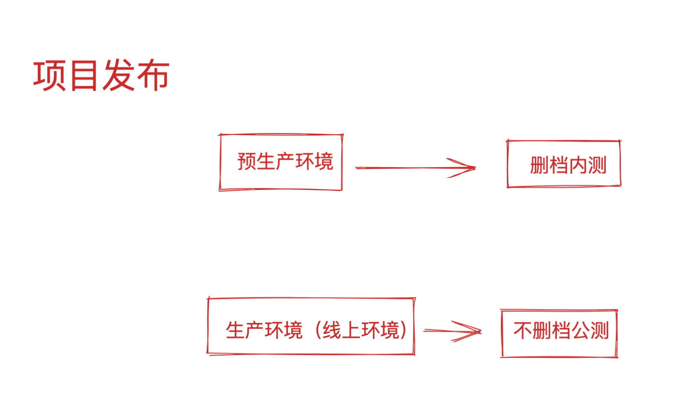
网站是什么
网站(Website)开始是指在因特网上，根据一定的规则，使用HTML（标准通用标记语言下的一个应用）等工具制作的用于展示特定内容的相关网页的集合。
简单地说，网站是一种沟通工具，人们可以通过网站来发布自己想要公开的资讯，或者利用网站来提供相关的网络服务。
人们可以通过网页浏览器来访问网站，获取自己需要的资讯或者享受网络服务。
https://www.taobao.com/ 网购零售平台
网站是有前端开发、后端开发合作、写好了代码、交给运维同学，部署到服务器上，用户就可以看到了。
前端姑娘
学习html、css、js、⻚面美观、美化，和美工对接，处理图片，颜色，大小，字体等 毕业后，开发网站的⻚面，以及高级前端，也会涉及服务器，后端的知识。
未登录淘宝账号，看到的前端页面
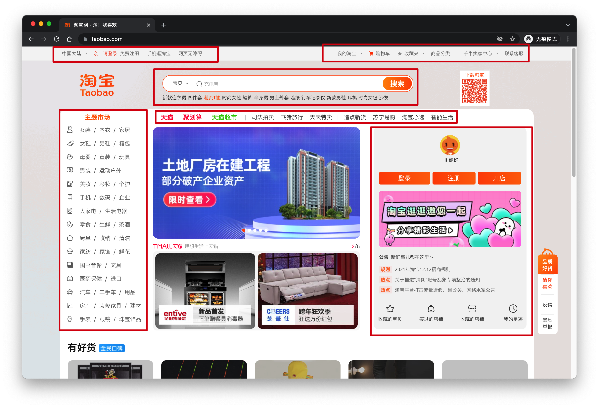
后端小哥哥
后端开发，主要是功能开发，处理数据的，比如python后端开发。
学习python的语言基础，网⻚开发的知识，数据库，框架，架构等
学完了，就去公司开发这样的后台框架，提供数据。
登录之后，发现前端里，多了一些用户的数据信息
这是后端发来的。
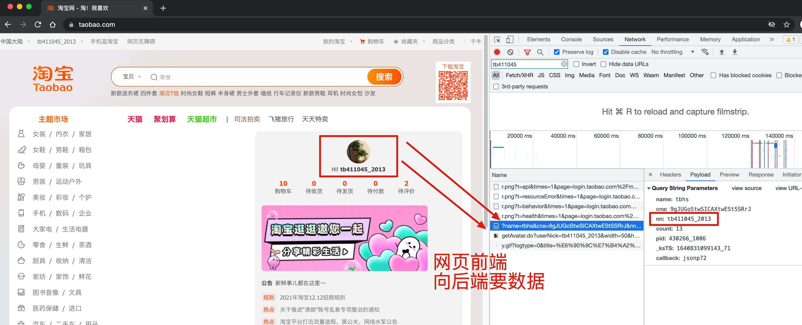
这些数据，是后端开发天天看的东西，小白是看不懂的，得前端给你转化一下，是不是就看到美化后的数据了。
网站分类
我们学习运维，一大部分的维护方向，是维护网站正确部署且运行在服务器上。
那么关于网站是什么，我们必须得了解它的业务概念。
网站说白了是一个信息公开展示的平台，或者利用网站提供相关盈利服务，比如视频、小说VIP充值服务。
以开发语言区分
对于网站由什么语言开发，我们运维进行部署的手段也跟着变化。
比如是Python开发的、Java开发的、PHP开发，语言都有各自的优缺点，以及最适合的场景。
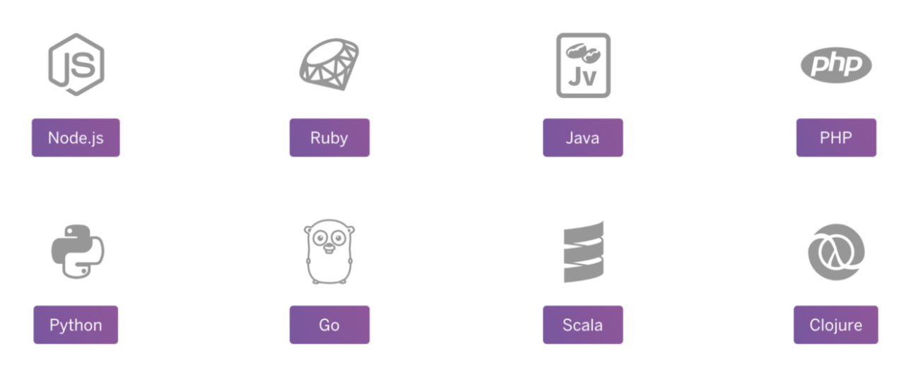
以用途分类
学习网站用途分类，是让大家了解，以后从事运维工作，维护的网站业务大约有哪些。
以及关于网站域名的学习、也是以业务区分。
- 以用途分类
- 门户网站、提供综合类互联网信息的网站，如新浪、网易、腾讯网。
- 行业网站、如钢铁网，http://www.csteelnews.com/
- 娱乐网站、如斗鱼、虎牙网。https://www.huya.com/
- 以持有者分类
- 个人网站、如学习博客记录。
- 商业网站、淘宝、京东网
- 政府网、国务院网址、https://www.gov.cn/guowuyuan/
- 教育网、中国教育考试网，https://www.neea.edu.cn/
- 以面向不同的终端分类
- 移动端，https://m.huya.com/
- PC端，https://huya.com
访问网站的过程
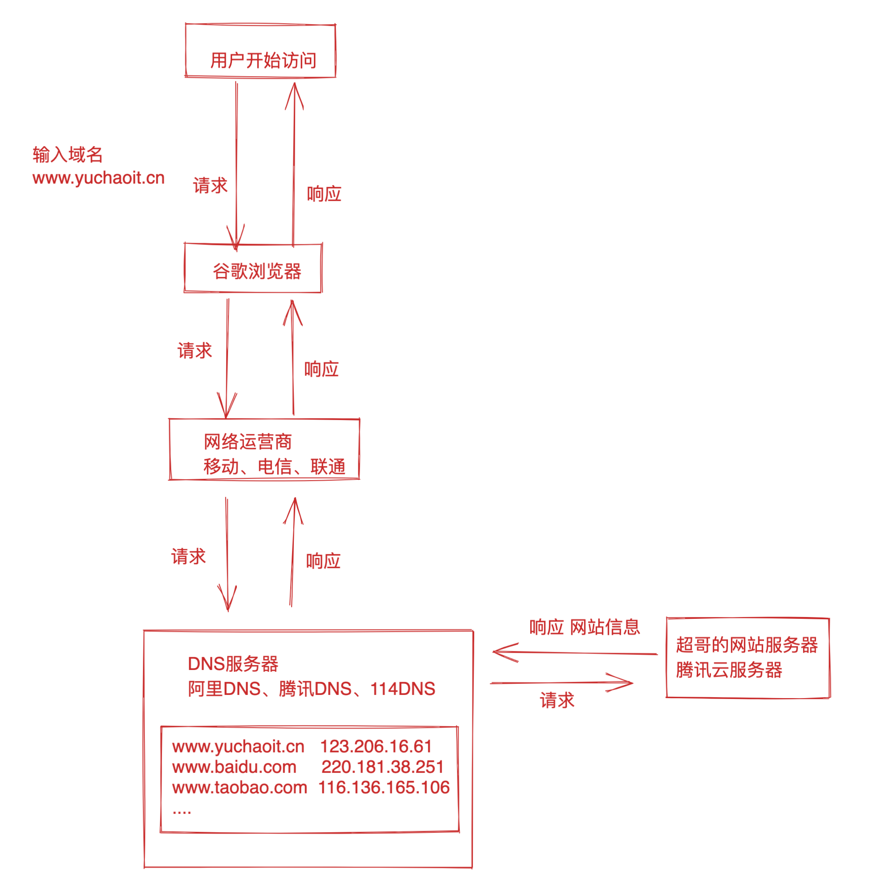
从图片里可看出，一个运行中的网站，用户是怎么访问到它的？
- 记住网站域名
- 域名被解析为了一个叫做IP地址的东西（身份证号定位了我们每一个人，IP地址定位网络中的一个计算机）
- 找到IP、找到了这台服务器
- 服务器网站运维部署，提供访问
- 用户看到网站内容
本章作业
- 解释我们正在使用哪些互联网行业的软件，移动端？PC端？
- 解释你学习的linux运维与互联网行业有什么联系？
- 解释你对Linux运维的理解？
- 解释你对前端、后端、运维的理解？
- 解释你理解的网站和运维的关系？
- 预习下一节Linux系统安装